Autor: Manuel Gómez Ruiz
Asignatura: Despliegue de Aplicaciones Web
Fecha: 20/02/2025
Práctica 6.3 - Despliegue de servidores web con usuarios autenticados mediante LDAP usando Docker y Docker-compose
Despliegue con Docker de Nginx + demonio de autenticación LDAP + OpenLDAP
Comenzamos conectándonos al servidor mediante SSH y creando la siguiente estructura de archivos y directorios:
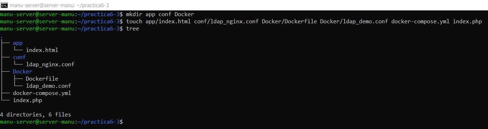
Dentro del archivo index.html ubicado en el directorio app, se debe agregar un texto de prueba que se mostrará en la página web.
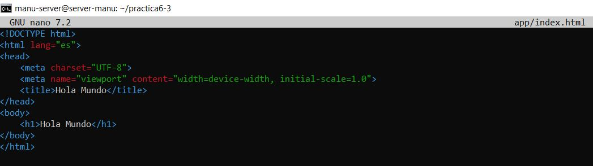
En el archivo ldap-nginx.conf, que se encuentra en el directorio conf, debemos agregar la siguiente configuración:
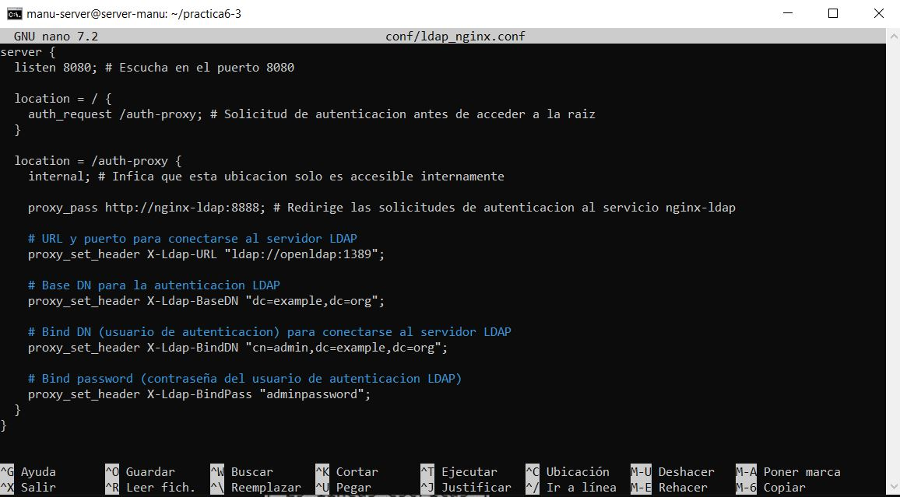
Con esta configuración, Nginx escucha en el puerto 8080 y utiliza la ruta /auth-proxy para realizar una autenticación previa. Se redirige la autenticación al servicio en http://nginx-ldap:8888. Además, se configuran los encabezados para que Nginx se conecte al servidor LDAP en ldap://openldap:1389, estableciendo el DN base y las credenciales necesarias para las consultas LDAP.
A continuación, creamos el archivo docker-compose.yml, con la configuración adecuada para levantar los contenedores con los servicios openldap, nginx y nginx-ldap.
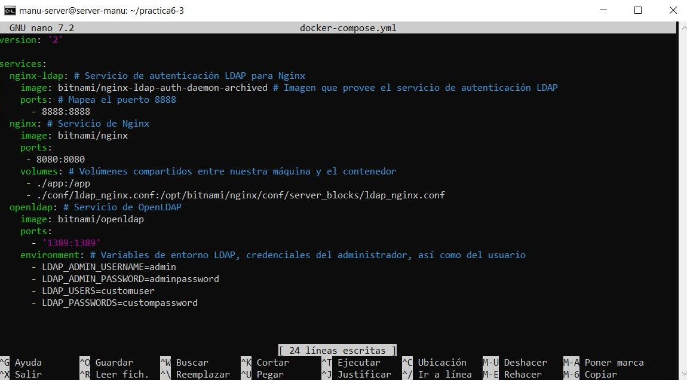
Una vez configurado, ejecutamos el comando docker compose up -d para levantar los contenedores en segundo plano.
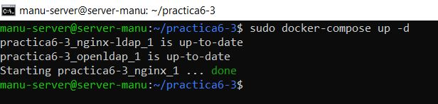
Habilitamos el puerto 8080 que va a ser utilizado por Nginx en la directiva proxy_pass.
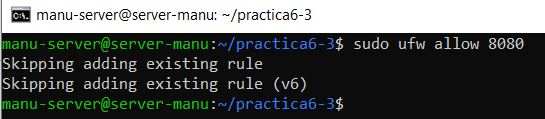
Si accedemos desde nuestra máquina anfitriona a la IP del servidor (192.168.100.27 en mi caso) con el puerto 8080, nos saltará la autenticación.
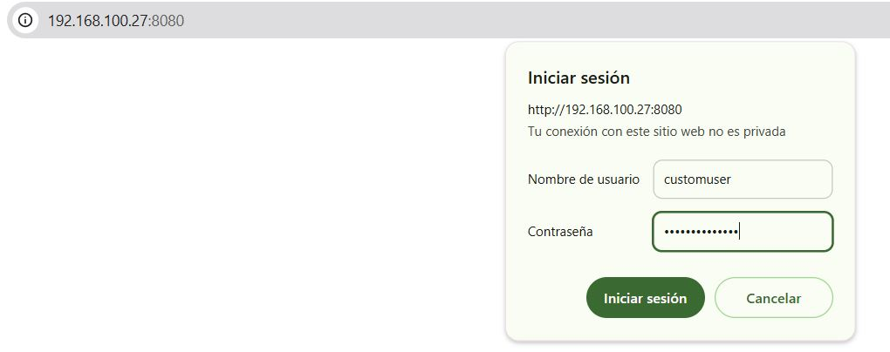
Y si nos autenticamos correctamente usando las credenciales LDAP, podremos acceder a la página web.
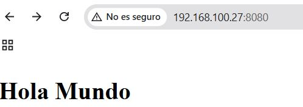
Despliegue con Docker de PHP + Apache con autenticación LDAP
Crea un index.php con un texto simple para cuando la autenticación por LDAP se haya realizado correctamente.
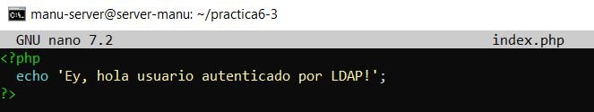
Dentro del directorio Docker crea un archivo Dockerfile, si aún no lo tienes y añadele el siguiente contenido:
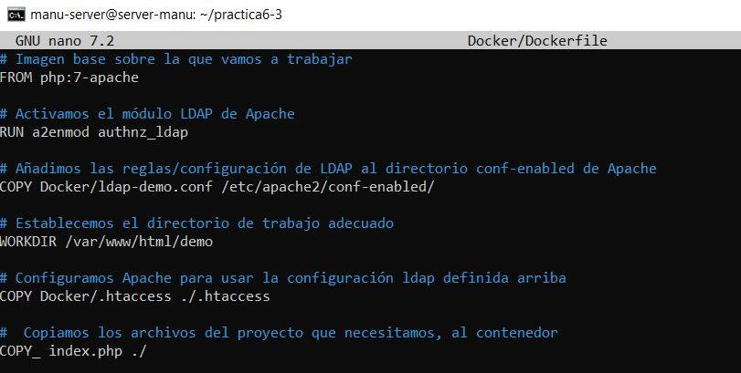
Este archivo construye una imagen Docker que utiliza Apache y PHP, y habilita la autenticación LDAP.
Ahora debemos crear el archivo ldap-demo.conf, que contendrá la configuración LDAP, estableciendo los criterios de conexión con el contenedor de OpenLDAP, password y URL de conexión.
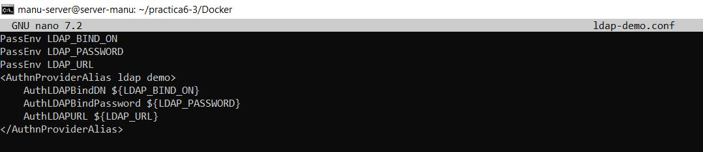
Por último, crea el archivo .htaccess que se utilizará para configurar la autenticación básica en Apache y proteger la aplicación web.
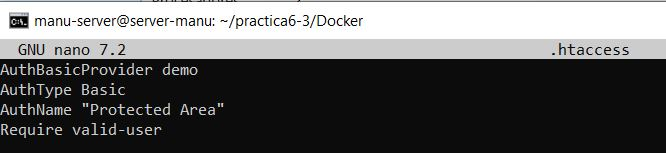
Para construir la imagen Docker, utilizamos el comando docker build.
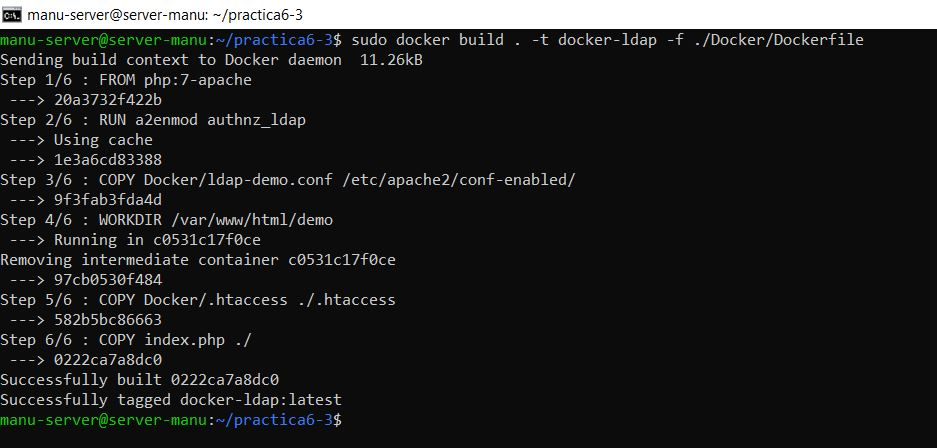
Corre el contenedor en primer plano, indicando las credenciales de nuestra cuenta LDAP mediante variables de entorno con la flag -e.
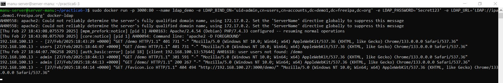
Si accedemos a http://IP-SERVIDOR:3000/demo e introducimos en la autenticación el valor pasado en la captura anterior como uid y el LDAP_PASSWORD, veremos el contenido de nuestro index.php.
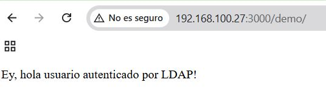